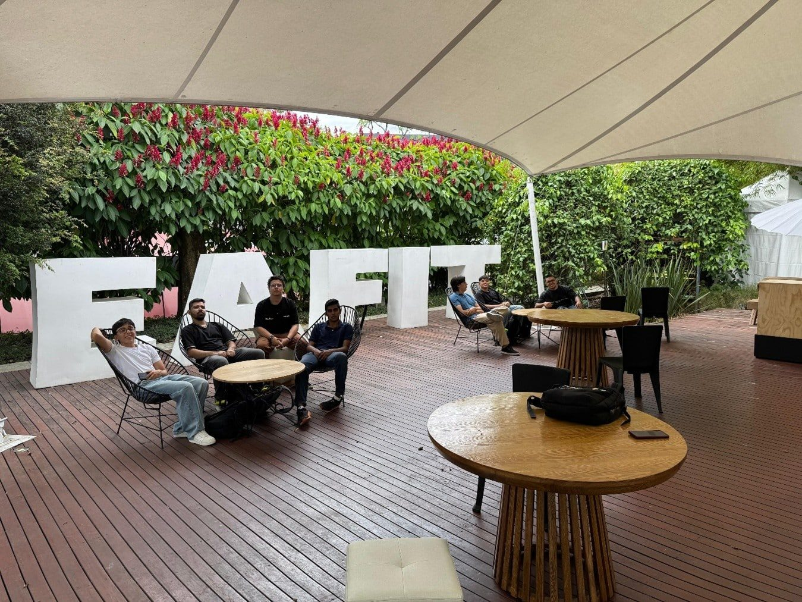
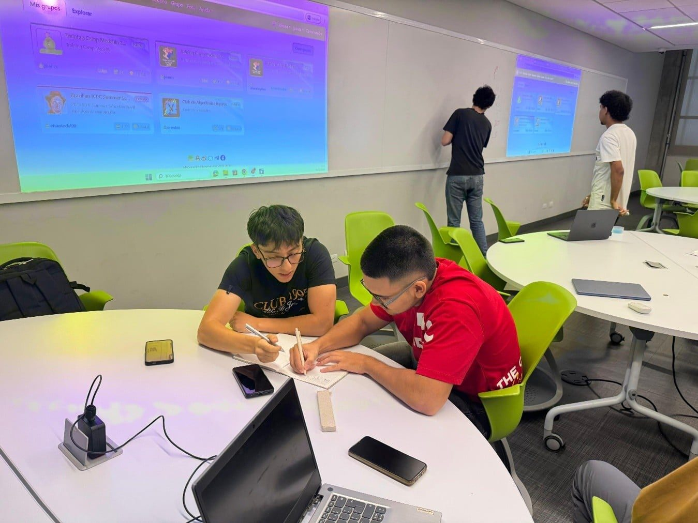
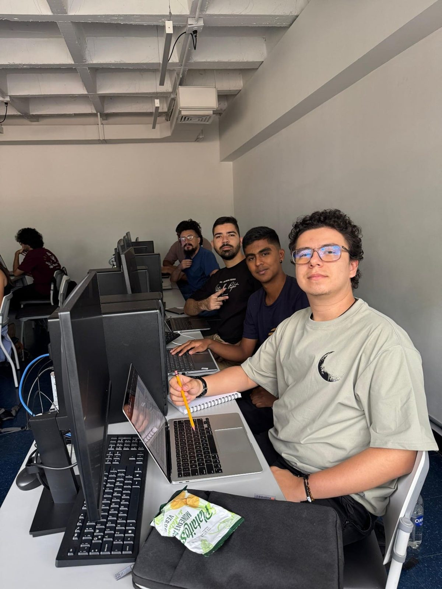
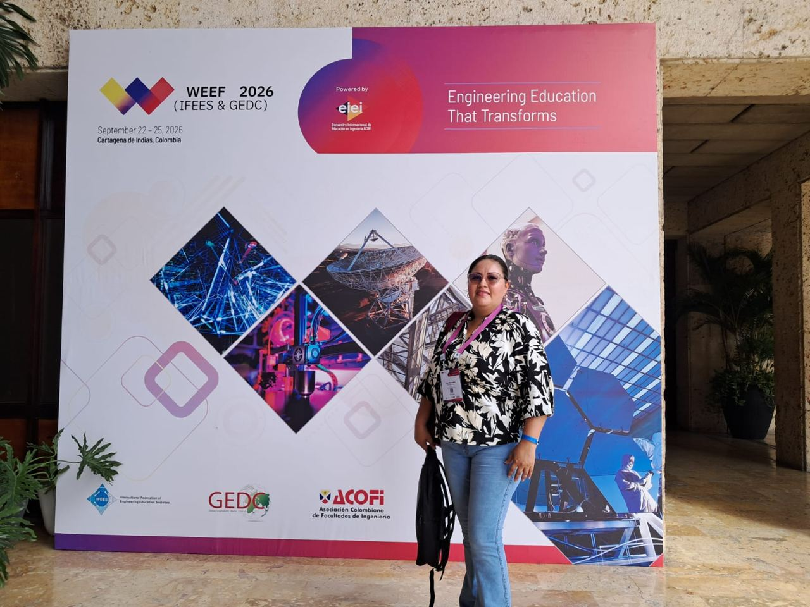
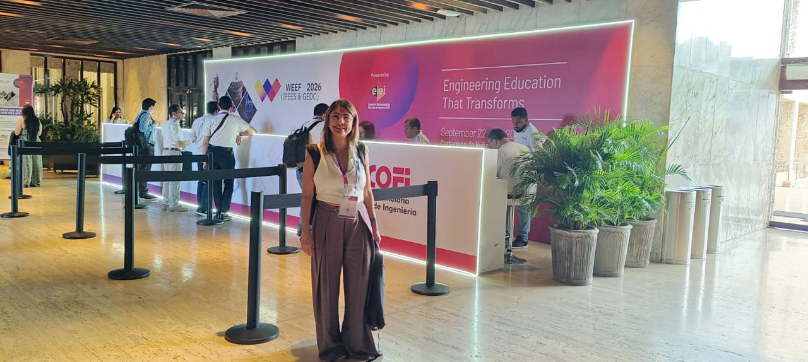
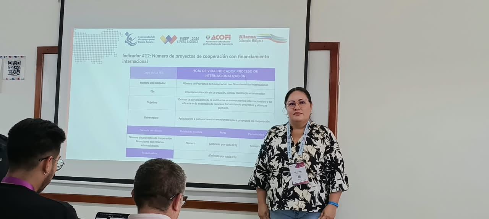
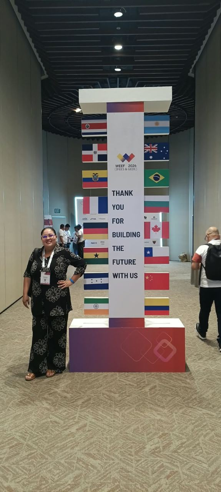
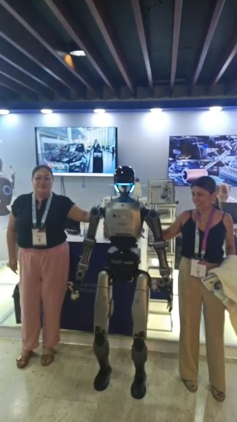
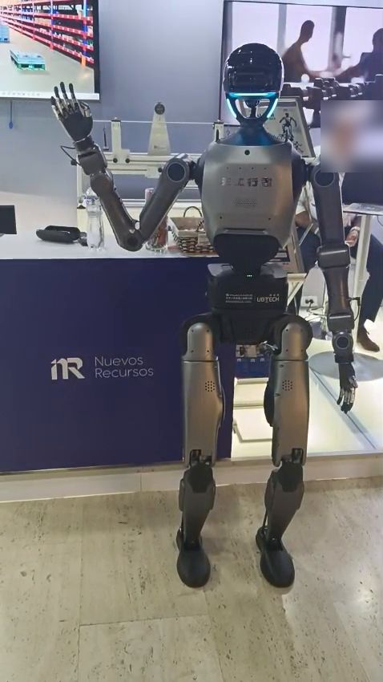

Andrés David Guevara Martínez
Semestre 8 · Ingeniería de Sistemas
Proyecto de la VI Convocatoria de Internacionalización del Currículo (IdC) 2026
Nueve estudiantes de Ingeniería de Sistemas viajaron a Medellín para entrenar programación competitiva del 30 de junio al 10 de julio de 2026, con EAFIT como institución aliada.
El grupo participó en las categorías básica y avanzada, de modo que cada estudiante entrenó según su nivel de experiencia.
El campamento reunió a entrenadores y mentores con trayectoria en maratones de programación, competidores que han llegado a instancias mundiales del ICPC y expertos internacionales, entre ellos invitados de Argentina.
El programa combinó sesiones teóricas, talleres prácticos y simulacros de competencia. Los estudiantes trabajaron estrategias para resolver problemas bajo presión de tiempo.
Además del componente técnico, la experiencia permitió establecer contacto con semilleros de otras instituciones y con competidores de distintas partes, lo que amplía las posibilidades de intercambio académico del semillero Goslint.



Curso virtual en Moodle, de 8 sesiones y 24 horas, que fortaleció en los estudiantes la descomposición de problemas, el reconocimiento de patrones, la abstracción y el pensamiento algorítmico.
Al terminar el curso, el estudiante analiza un problema, lo divide en partes manejables, reconoce patrones, se queda con la información relevante y propone una solución en forma de procedimiento, pseudocódigo o modelo.
En cada sesión había presentaciones con la explicación de los conceptos, infografías de resumen y videos complementarios. Las actividades incluyeron cuestionarios interactivos y ejercicios prácticos, y los estudiantes entregaron sus productos en la plataforma.
La evaluación combinó un proyecto aplicado a un problema real o contextualizado, talleres prácticos, actividades asincrónicas guiadas, discusión de casos y una presentación final de la solución.
El 7 de noviembre de 2026 se realizó la Hackathon Clase Espejo Interinstitucional 2026 con REDDIS. Se inscribieron 1.658 estudiantes y egresados de distintas instituciones y 841 registraron asistencia.
La actividad fortaleció el intercambio académico y la cooperación entre instituciones, y mostró cómo se pueden hacer experiencias de formación compartidas con apoyo de la tecnología.
El puntaje de cada equipo sumó por partes iguales el trabajo directo durante la jornada y los ejercicios resueltos en la fase asincrónica. Los empates se resolvieron por el menor tiempo acumulado.
Los retos cubrieron cinco temas de programación básica. Estructuras condicionales tuvo la mayor tasa de resolución (81,7 %) y arreglos unidimensionales la menor (70 %). En este último tema, la mayoría de los intentos fallidos se debieron a errores de sintaxis de PSeInt.
El equipo GUAVIARE encabezó el ranking con 100 puntos y 16 ejercicios resueltos.
Es uno de los cuatro productos del proyecto y se conecta con los contactos hechos en WEEF 2026, donde se identificó la posibilidad de repetir clases espejo con otras instituciones.
Dos docentes del programa participaron en el congreso organizado por ACOFI, en la reunión de REDIS nacional y en el taller sobre internacionalización de currículos de ingeniería.
En esos espacios se hicieron contactos con docentes e investigadoras de otras instituciones, y se conversó sobre estrategias de internacionalización curricular, metodologías de enseñanza y oportunidades de cooperación.
De esos contactos salieron posibilidades concretas: clases espejo, intercambio de experiencias pedagógicas, participación en redes de colaboración e iniciativas de investigación en educación en ingeniería.






Estudiantes vinculados al proyecto según el Informe Final IdC 2026.
Semestre 8 · Ingeniería de Sistemas
Semestre 8 · Ingeniería de Sistemas
Semestre 8 · Ingeniería de Sistemas
Semestre 6 · Ingeniería de Sistemas
Semestre 8 · Ingeniería de Sistemas
Semestre 8 · Ingeniería de Sistemas
Semestre 9 · Ingeniería de Sistemas
Semestre 4 · Ingeniería de Sistemas
Semestre 8 · Ingeniería de Sistemas
Semestre 8 · Ingeniería de Sistemas
Semestre 8 · Ingeniería de Sistemas
Semestre 8 · Ingeniería de Sistemas
Universidad del Valle, sede Buga